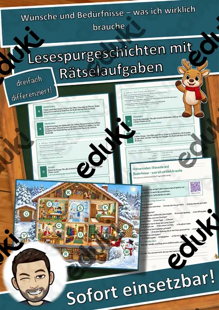
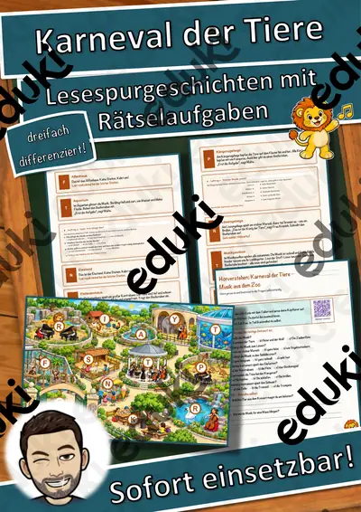
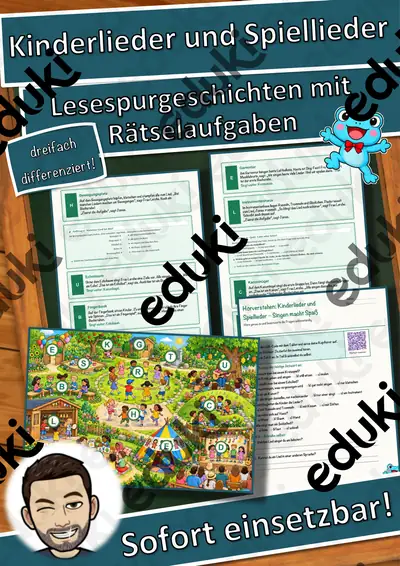
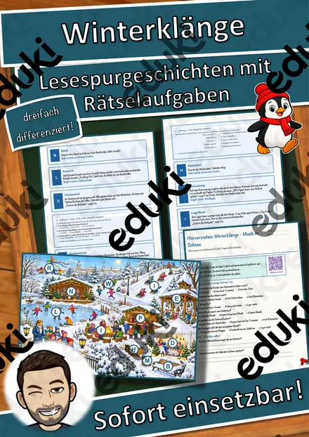
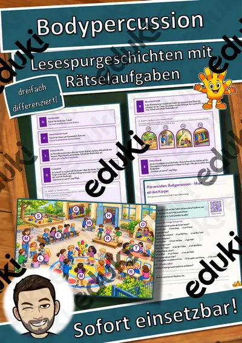
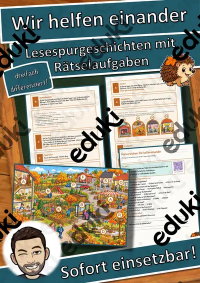
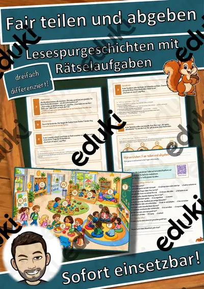
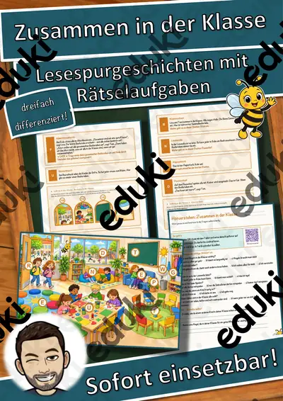

Schlaflieder – Musik zum Träumen – Lesespurgeschichte mit Rätselaufgaben (Klasse 1)
Schlaflieder – Musik zum Träumen – Lesespurgeschichte Musik (Klasse 1/2)Begib dich mit deiner Klasse auf eine leise Lesespur durch eine Musiknacht in der Schule! Mina und Pepe übernachten mit ihrer Klasse in der Schule und entdecken, wie Musik beim Einschlafen hilft: Am Spieluhrenregal dreht sich eine kleine Melodie immer wieder, in der Wiegenecke schaukeln alle im Dreiertakt, am Mondfenster singen sie ganz langsam, in der Flüsterecke und im Summkreis wird die Stimme immer leiser, in der Gitarrenecke klingen sanfte Töne, im Sternenzelt hören sie ein Schlaflied aus einem anderen Land – und im Matratzenlager singen alle zusammen, bis es ganz still ist. Ihr Stoff-Schaf Wolli ist immer dabei. Am Ende jedes Abschnitts verrät ein Hinweis den nächsten Ort auf dem Plan – nur wer genau liest, findet den Weg und sammelt alle geheimen Buchstaben zum Lösungswort.
Die perfekte Lesespur für den MUSIKUNTERRICHT der 1. und 2. Klasse: Sie verbindet erstes sinnentnehmendes Lesen mit bewusstem Stimmeinsatz, Tempo und Lautstärke und einem ruhigen Klassenmoment. Das Material ist SOFORT EINSETZBAR und in DREI DIFFERENZIERUNGSSTUFEN (leicht ★ / mittel ★★ / schwer ★★★) angelegt.WICHTIG: Das komplette Material ist sowohl in FARBE als auch in SCHWARZ-WEISS enthalten – ideal zum Sparen von Druckkosten.DAS IST ENTHALTEN
- Lesespurgeschichte in 3 Niveaus (leicht, mittel, schwer)
- farbiger Plan als Suchkarte
- Hörverstehen mit QR-Code zur MP3 (selbstständiges Hören mit Kopfhörern)
- vier Aufträge auf dem Weg: eine Rechenaufgabe, eine Zuordnung, ein Quiz und ein Steckbrief
- Rätselseite (Wörter-Suchsel + Fragen)
- Ausmalbild zum Thema (Musiknacht im Matratzenlager)
- ausführliches Lösungsblatt für die Lehrkraft
- alles zusätzlich als komplette Schwarz-Weiß-VarianteSO GEHT DIE LESESPURDie Kinder lesen ab START, finden im Text den nächsten Ort, suchen ihn auf dem Plan und lesen bei diesem Ort weiter. An jedem richtigen Ort gibt es einen Buchstaben. Eingebaute Sackgassen (Turnhalle, Garderobe, Schulküche, Hausmeisterloge) gehören nicht zur Spur und dienen der Selbstkontrolle. Am Ende werden die gesammelten Buchstaben umgestellt und ergeben ein geheimes Lösungswort. (Die Lösungen sind selbstverständlich nur im Lösungsblatt für die Lehrkraft enthalten.)INHALTLICHER SCHWERPUNKTDie Kinder erleben, warum Schlaflieder beruhigen (leise, langsam, sich wiederholende Melodie), setzen ihre Stimme bewusst leise ein (flüstern, summen), schaukeln ein Wiegenlied im Dreiertakt, lernen sanfte Instrumente kennen und erfahren, dass es Schlaflieder überall auf der Welt gibt.ABGEDECKTER LEHRPLAN (Klasse 1/2, Musik)
- Musik (LehrplanPLUS Bayern) – Jahrgangsstufe 1/2 „Sprechen – Singen – Musizieren“ und „Musik hören“: Lieder singen, die Stimme vielfältig und bewusst einsetzen, langsam/schnell und leise/laut unterscheiden, sich zur Musik bewegen.
- Deutsch – Lesen: kurze Texte sinnentnehmend lesen; Zuhören: einem Hörtext folgen (Hörverstehen mit MP3).
- Mathematik – Addition, Subtraktion und erste Malaufgaben im Zahlenraum bis 100.
- Fächerübergreifend / Kompetenzen: Heimat- und Sachunterricht (Tag und Nacht, Schlaf und Erholung), interkulturelles Lernen, genaues Lesen und Prüfen, kreatives Gestalten (Ausmalbild).
Geeignet für Freiarbeit, Stationenlernen, Vertretungsstunden, Wochenplan, Projekttage, Lesenacht und Distanzunterricht. Klassenstufe 1/2.
Ähnliche Materialien

Wünsche und Bedürfnisse – was ich wirklich brauche – Lesespurgeschichte mit Rätselaufgaben (Klasse 1)

Karneval der Tiere – Musik aus dem Zoo – Lesespurgeschichte mit Rätselaufgaben (Klasse 1)

Kinderlieder und Spiellieder – Singen macht Spaß – Lesespurgeschichte mit Rätselaufgaben (Klasse 1)

Winterklänge – Musik im Schnee – Lesespurgeschichte mit Rätselaufgaben (Klasse 1)

Bodypercussion – Musik mit dem Körper – Lesespurgeschichte mit Rätselaufgaben (Klasse 1)

Wir helfen einander – Lesespurgeschichte mit Rätselaufgaben (Klasse 1)

Fair teilen und abgeben – Lesespurgeschichte mit Rätselaufgaben (Klasse 1)
